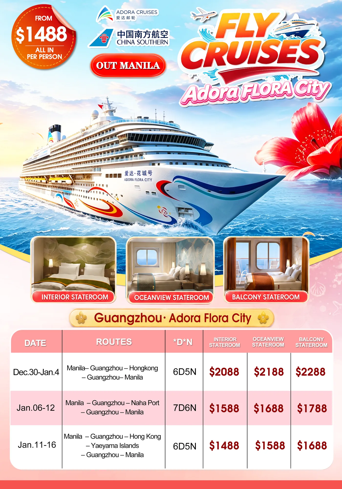

From $1,488Japan6 days 5 nightsDeparts Manila (NAIA)Available now
Adora Flora City Fly + Cruise 6D5N – Guangzhou – Hong Kong – Ishigaki
Out Manila · Fly + cruise
Fly Manila to Guangzhou, board the Adora Flora City for Hong Kong and Ishigaki (Okinawa), then return via Guangzhou to Manila: 5 nights on board.

Tap to enlarge
Tour dates
2027 · from Manila
Departures from Manila, Jan 11–16 2027 to Jan 11–16 2027. The rate changes by date: an amount on a date is added to the base rate per pax. Seats are limited and confirmed at booking.
Tap a date to book it. Your inquiry form opens with this package and the departure filled in. Orange dates add a peak-date surcharge per pax to the tour rate. Seats are confirmed at booking.
Quotation
per person
Tour rate
per pax
Adult & child with bedtwin sharing
$1,488
Child without bed / infantrate on request
Ask us
Not in the tour rate
per pax
Port taxes and fees (collected in Manila)USD 180 per person
USD 180
Gratuities (paid on board)approx. HKD 140 per person per night
HKD 140
China group visa (USD 80 per person); two entries to China are needed (Day 1 and Day 6). If using an individual visa, it must be a multiple-entry visa
USD 80
About this package
6 days 5 nights
A fly and cruise package: you fly from Manila to Guangzhou, tour the city for half a day, then board the 141,900-ton Adora Flora City for five nights at sea with calls at Hong Kong and Ishigaki in Okinawa, Japan. After disembarking back in Guangzhou you enjoy another half-day city tour before flying home to Manila. Rooms are twin sharing in your chosen cabin type.
Airfare
Hotel
Meals
Tour guide
Entrance fees
Baggage
Duration
6 days 5 nights
Departure
Manila (NAIA)
Flight
China Southern via CAN
Baggage
20 kg + 7 kg carry-on
Hotels
5 nights on cruise ship
Meals
Daily breakfast + 5 meals
Transport
Private transfers
Guide
English (Guangzhou tours)
Your route
ManilaDay 1
1GuangzhouCanton Tower
2Nansha PortBoarding
3Hong KongPort call
4At seaAdora Flora City
5IshigakiOkinawa
6GuangzhouCity tour
ManilaDay 6
OutboundMNL CAN
CZ3078 08:20–10:50 local time
ReturnCAN MNL
CZ3077 20:00–22:30 local time
Travel date Jan 11–16. Flight times are confirmed with your booking. +1 = arrives the next day.
Day-by-day itinerary
6 days 5 nights
DayCityItineraryMeals & hotel
Day01
Manila – Guangzhou – Nansha PortAIR / BUS / CRUISE
Manila – Guangzhou, city tour and boarding
CZ3078 MNL – CAN 08:20–10:50
Flight CZ3078 Manila – Guangzhou, 08:20–10:50.
Met at Guangzhou Airport by an English-speaking guide for a half-day city tour.
Visit Huacheng Square and enjoy a scenic tram ride.
Photo stop at the Canton Tower.
Explore the historic Yongqingfang and Shamian Island.
Transfer to Nansha Port and board the ship (vessel departs 23:30).
Adora Flora City cruise ship
BLD
Day02
Hong KongCRUISE
Hong Kong
Breakfast on board.
Arrive Hong Kong 13:00, ship departs 23:00.
Free time for a do-it-yourself tour, or join the optional shore excursion on a shared bus with a Chinese-speaking guide (register at the Adora Cruise Tourism Counter after boarding).
Sample excursion: Old & New Hong Kong Tour – East Coast Park, Central Market, Tai Kwun, Man Mo Temple (7 hrs).
Adora Flora City cruise ship
BLD
Day03
At seaCRUISE
At sea
Full day at sea with onboard dining, shows, entertainment, shopping and family activities.
Adora Flora City cruise ship
BLD
Day04
Ishigaki, OkinawaCRUISE
Ishigaki, Okinawa
Arrive Ishigaki 13:00, ship departs 22:00.
Free time for a do-it-yourself tour of the Yaeyama Islands (white-sand beaches and snorkeling spots), or join the optional shore excursion on a shared bus with a Chinese-speaking guide.
Sample excursion: Okinawa Tropical Escape – Pineapple Park, Manzamo Cape, PARCO CITY Shopping Center (7.5 hrs, meals not included).
Adora Flora City cruise ship
BLD
Day05
At seaCRUISE
At sea
Full day at sea with onboard activities, dining and shopping.
Adora Flora City cruise ship
BLD
Day06
Guangzhou – ManilaCRUISE / BUS / AIR
Guangzhou – Manila
Arrive Guangzhou at 13:00 and disembark.
Half-day Guangzhou city tour, then private transfer to Guangzhou Airport.
Flight CZ3077 Guangzhou – Manila, 20:00–22:30.
CZ3077 CAN – MNL 20:00–22:30
Sweet homeBack in Manila
BLD
Meals: B breakfast · L lunch · D dinner · crossed out = not included. Orange = sightseeing stop · bold = shop visit included in the tour.
What’s covered
Inclusions
International airfare, airport taxes and terminal fees
Baggage allowance: 20 kg check-in and 7 kg hand carry
2 land meals in Guangzhou
5 nights’ cabin accommodation on the cruise ship, twin sharing, with daily breakfast
Meals at designated complimentary restaurants on board
Entertainment: interactive parties, theater performances and designated complimentary facilities on board
Half-day Guangzhou city tours with English-speaking guide on Day 1 and Day 6
Exclusions
Port taxes and fees (collected in Manila): USD 180 per person
Gratuities (paid on board): approx. HKD 140 per person per night
Single room supplement
China group visa (USD 80 per person); two entries to China are needed (Day 1 and Day 6). If using an individual visa, it must be a multiple-entry visa
Philippine travel tax
Travel insurance
Personal onboard expenses: Wi-Fi, phone calls, laundry, shopping, bar and café, spa, etc.
Shore excursions (see optional tours)
Accommodation
or similar
Nights 1–5: Adora Flora City cruise ship, twin-share cabin (Interior, Oceanview or Balcony)
Optional tours
add to your trip
Hong Kong shore excursion
Hong Kong shore excursion (sample: Old & New Hong Kong Tour, 7 hrs)
(shared bus, Chinese-speaking guide only, meals not included)
HKD 1,018per pax
Important notice
please read
The itinerary is for reference only; actual visiting times, order and content may be adjusted.
Port call and departure times are for reference only and may vary with weather, tides or other factors. In line with international practice, the cruise line puts passenger safety first and reserves the right to change the route in unforeseen circumstances.
Shore excursions are optional and not included: shared bus tours with a Chinese-speaking guide only, meals excluded, registered at the Adora Cruise Tourism Counter after boarding. Hong Kong: Old & New Hong Kong Tour, 7 hours, HKD 459 per person. Ishigaki: Okinawa Tropical Escape, 7.5 hours, HKD 559 per person. Two optional tours total about HKD 1,018 per person.
Bring a valid passport (at least 6 months' validity from the return date), a photocopy of the passport's first page and a valid visa for re-entry into China.
Two China entries are needed (Day 1 and Day 6): a China group visa is USD 80 per person, or an individual visa must be multiple-entry.
If a traveller cannot enter or leave the country on time because of passport or visa problems, all fees are non-refundable and any related expenses are borne by the traveller.
Cruise ship details: Adora Flora City, 141,900 tons, 341 m long, 15 decks, 2,130 cabins.
Cabin types: Interior twin, Oceanview twin or Balcony twin.
Port call and departure times are for reference only and may change with weather, tides or safety needs; the cruise line may change the route.
Shore excursions are optional shared-bus tours with a Chinese-speaking guide, booked on board.
Where you’ll go
10 stops
1
Guangzhou
The major port city of southern China, with the half-day city tours at the start and end of this trip.
2
Huacheng Square
A large public square in Guangzhou's Zhujiang New Town, surrounded by modern landmarks.
3
Canton Tower
Guangzhou's slender landmark tower on the Pearl River, seen here on a photo stop.
4
Yongqingfang
A restored historic lane in Guangzhou's Xiguan area, with old Cantonese buildings, cafes and shops.
5
Shamian Island
A small riverside island in Guangzhou with European-style colonial buildings and tree-lined streets.
6
Nansha Port
Guangzhou's cruise port, where passengers board the ship after the city tour.
7
Hong Kong
A Special Administrative Region of China with Victoria Harbour, the Peak, Disneyland, Ocean Park and world-class shopping and dining.
8
Ishigaki
The main island of Japan's Yaeyama group in Okinawa, known for beaches and clear water.
9
Yaeyama Islands
A group of subtropical islands in Okinawa, Japan, known for white-sand beaches and snorkeling.
10
Adora Flora City
Adora Cruises' 141,900-ton cruise ship used for this fly-and-cruise trip.
Know before you go
Japan tips
Practical tips for Japan, from entry rules to what to eat. General guidance for a Philippine traveller — rules and prices change, so confirm the latest before you fly. Need a hand with the visa or tickets? Our team is glad to help.
Entry requirements
Tourist visa required
Philippine passport holders need a Japan short-stay tourist visa before travel — our ticketing desk can guide you through the documents. Passport valid for the whole stay. No vaccinations are required.
Money
Yen (¥); carry cash
Cards are widely accepted, but Japan still loves cash — keep some for small shops, shrines and buses. Get a Suica or Pasmo IC card for trains and convenience stores. Do NOT tip; it can cause confusion. Budget roughly ₱3,000–5,000 a day for meals and extras.
Weather & what to pack
Cool at Mt. Fuji; check your month
Tokyo is mild in spring and autumn, hot and humid in summer, and cold in winter; Mt. Fuji’s fifth station is always chilly and windy. Bring layers, a warm jacket for Fuji, comfy walking shoes and a compact umbrella.
Getting around
Trains run on time
Japan’s trains and subways are punctual and reach everything; tap in with a Suica or Pasmo card. Google Maps gives exact platforms and times. Your package includes airport transfers and coach transport on tour days.
Language
Japanese; some English
City signs are bilingual and staff are helpful, though spoken English is limited. Useful words: Konnichiwa (hello), Arigatō (thank you), Sumimasen (excuse me). Google Translate’s camera reads menus for you.
Culture & etiquette
Quiet and orderly
Keep phone calls off the trains, avoid eating while walking, queue neatly and take your rubbish with you. Remove shoes where indicated, bow slightly in greeting, and never tip — a little politeness is deeply appreciated.
Safety & health
Among the world’s safest
Crime is extremely low and lost items are often handed in. Tap water is safe to drink. Emergencies: police 110, ambulance and fire 119. Carry your passport, as it is your official ID while in Japan.
Connectivity
Pocket Wi-Fi or eSIM
Rent a pocket Wi-Fi or buy a Japan eSIM for reliable data; free Wi-Fi exists but is patchy. Handy apps: Google Maps, Google Translate, Japan Travel by Navitime, and your Suica in Apple or Google Wallet.
Must-see sights & food
Mt. Fuji, Shibuya, sushi
See Mt. Fuji and Lake Kawaguchi, Tokyo’s Sensō-ji temple, the Shibuya crossing and Yokohama’s bay. Eat sushi, ramen, tempura and okonomiyaki — and grab snacks from any convenience store.
Fly Manila to Guangzhou, cruise on the Adora Flora City to Naha, Okinawa with an overnight call, then a Guangzhou hotel night before flying home to Manila.
Five days in Japan’s Kansai region: Osaka Castle, Fushimi Inari, Arashiyama Bamboo Grove, Todaiji and the Nara deer, a free day, and Rinku Premium Outlets.